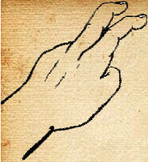

-Свен, ты что-нибудь придумал для тренировки?
-Свен, ты что-нибудь придумал для тренировки?
Карманные кражи
Прежде всего, необходимо выяснить, где лежит бумажник. Большинство людей имеют обыкновение держать деньги в правом кармане. Он обычно выпирает из заднего или бокового кармана и может быть легко замечен. Следующий шаг в этом деле — определить, как лежит бумажник. Позиция бумажника обычно диктует, какие методы его извлечения следует применить. Самый типичный способ украсть бумажник — так называемый «перехват двумя пальцами». Стоя рядом с «жертвой», карманник складывает указательный и средний пальцы буквой V вводит их в карман. Воры объясняют это следующим образом: "Ваши пальцы как бы одновременно находятся в кармане и вне его. Этого достаточно, чтобы извлечь бумажник, по недостаточно, чтобы владелец почувствовал что-то чужеродное"...
Во время столкновения и отвлечения внимания "жертвы" вop перехватывает бумажник и вытаскивает его наружу. Это делается не застенчиво и осторожно, а быстро и мощно. Разновидностью этою способа является подтаскивание бумажника к верху кармана, чтобы извлечь его позже...

-Свен, ты что-нибудь придумал для тренировки?
 -Ооо, тебе это понравится. Манекены, что стоят во дворе оснащены карманами с механизмом. Если ты сделаешь что-то не так, то тебя шандарахнет током.
-Ооо, тебе это понравится. Манекены, что стоят во дворе оснащены карманами с механизмом. Если ты сделаешь что-то не так, то тебя шандарахнет током.
-А это не слишком жёстко?
-Да нее!